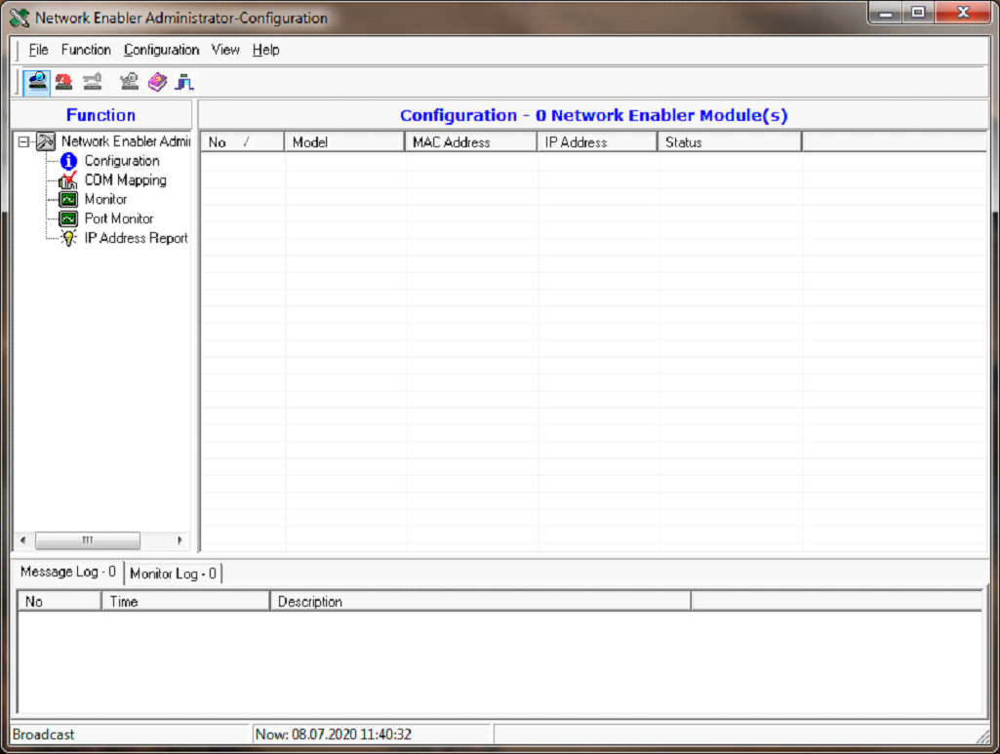

Настройка АИ-АТ943
Установка программы Network Enabler Administrator
После скачивания программы установить на ПК к которому будет подключен для настройки АИ-АТ943. Для установки Network Enabler Administrator необходимо обладать правами администратора.
- Запустите программу Network Enabler Administrator.
- Нажмите Next, чтобы установить программу, используя имя программы по умолчанию, или выберите другое имя.
- Нажмите Install, для выполнения процесса установки.
- Окно установки сообщает о ходе процесса установки. Дождитесь окончания установки.
- Нажмите Finish, чтобы завершить установку Network Enabler Administrator.
Настройка модуля NE-4120A с Network Enabler Administrator
Для настройки адаптера необходимо подключить к нему питание от сетевого адаптера 12V-1А на разъём X1, а также подключить сетевой кабель Ethernet (под обжим EIA/TIA-568B) на разъём X2. После этого необходимо запустить программу Network Enabler Administrator. Если Ваша учетная запись не имеет прав администратора, то необходимо обратиться к системному администратору.
- После запуска программы появится ее главное окно. 
- Нажимаем на кнопку Broadcast для поиска всех подключенных к локальной сети устройств NE-4120A. После поиска появится список устройств.
Необходимое для настройки устройство NE-4120A можно идентифицировать по MAC Address, находящемся в соответствующем поле. MAC Address устройства нанесен на обратной стороне устройства на наклейке. В нашем случае это: 00:90:E8:7A:AC:08.
- Далее нажимаем правой кнопкой мыши по строке c необходимым устройством и выбираем Configuration/Configure. Изменение нужно внести в три вкладки 1. Network, 2. Operating Mode, 3. Serial.
- Раздел Network установить IP-адрес устройства. Получите действительный IP-адрес для модуля у сетевого администратора. Для изменения соответствующего параметра, надо установить опцию Modify напротив IP адреса.
- Далее выбираем из меню жмем кнопку Operating Mode.
- Откроется окно настройки установить опцию Modify, нажимаем Settings. Устанавливаем режим - TCP Client Mode, TCP IP Server (Destination Host), Force Tx Timeout (10 ms). Для примера адрес IP-host 93.125.106.138 (atomtex.com).
- Переходим на вкладку Serial, ставим галочку в поле Modify рядом со строкой и нажимаем Settings.
- Устанавливаем параметры интерфейса: 9600, None, 8, 1, None, Enable, RS-485, 2 wire.
- Вводим данные как пример и нажимаем кнопку Ok. Данные настройки должны быть согласованы с реальным подключенным оборудованием. После ввода всех настроек необходимо перезапустить модуль, чтобы новые настройки вступили в силу.

Настройка модуля NE-4120A в консольном режиме (через web-browser)
- В окне браузера набираем адрес устройства (например 192.168.200.117) и запускаем на соединение. По умолчанию, если пароль установлен, логин admin пароль moxa. Надо учитывать для соединения, чтобы адрес устройства попадал в подсеть данной локальной сети, по умолчанию заводские настройки модуля 192.168.127.254
- Далее как и в программе Network Enabler Administrator по такой же технологии устанавливаем последовательно необходимые настройки. В окне Network Settings устанавливаем IP-адрес устройства и нажимаем кнопку Submit.
- После переходим на вкладку Operating Settings и устанавливаем следующие настройки. Нажимаем кнопку Submit.
- Переходим на вкладку Serial Settings и задаем параметры интерфейса. Нажимаем кнопку Submit.
- После ввода всех настроек необходимо перезапустить модуль Save/Restart.

Настройка модуля NE-4120A с помощью команды ARP
Чтобы использовать ARP, ваш компьютер и модуль должны быть подключены к одной локальной сети. Вы также можете использовать перекрестный кабель Ethernet для прямого подключения модуля к порту Ethernet вашего компьютера с установленным MS-DOS и открытом ClientTelnet.
Ваш модуль должен быть настроен с заводским IP-адресом по умолчанию 192.168.127.254 перед выполнением команды ARP.
Чтобы настроить IP-адрес с помощью ARP, выполните следующие действия.
- Получите действительный IP-адрес для модуля у сетевого администратора.
- MAC-адрес модуля из ярлыка на модуле.
- Выполните команду «arp -s» в командной строке CMD вашего компьютера, набрав:
arp –s <новый IP-адрес> 00-90-E8-tt-tt-tt
Например: arp –s 192.168.200.117 00-90-E8-7А-АС-08
Начальная конфигурация IP-адреса серии NE-4120A 192.168.127.254.
В приведенном выше примере 192.168.200.117 - это новый IP-адрес, а 00-90-E8-7А-АС-08 - это MAC-адрес модуля, полученный на шагах 1 и 2. - Выполните специальную команду Telnet, набрав: telnet <новый IP-адрес> 6000 Например, telnet 192.168.200.117 6000 После выполнения этой команды появится сообщение «Ошибка подключения». После перезагрузки модуля его IP-адрес будет обновлен до нового адреса, и вы можете восстановить соединение, используя Telnet, Интернет WEB Console или Network Enabler Administrator, чтобы убедиться, что обновление прошло успешно.
Консоль Telnet
В зависимости от конфигурации вашего компьютера и сети вам может быть удобно использовать сетевой доступ для настройки IP-адреса вашего модуля. Это можно сделать с помощью программы Telnet, которая требует наличия у модуля сетевого подключения и IP-адреса.
- На рабочем столе Windows нажмите «Пуск» и выберите «Выполнить».
- Telnet к текущему IP-адресу модуля. Если вы настраиваете модуль в первый раз, вы можете подключиться к IP-адресу по умолчанию, набрав telnet 192.168.127.254
- Выберите Настройки сети, нажав 2, а затем Enter.
<< Главное меню >>
(1) Базовая настройка
(2) Сетевые настройки
(3) Серийные настройки
(4) Настройка DIO
(5) Рабочие настройки
(6) Доступные настройки IP
(7) Настройки автоматического предупреждения
(8) монитор
(9) Пинг
(а) Изменить пароль
(b) Загрузить заводские настройки по умолчанию
(v) Просмотр настроек
(s) Сохранить/перезапустить
(q) Выйти